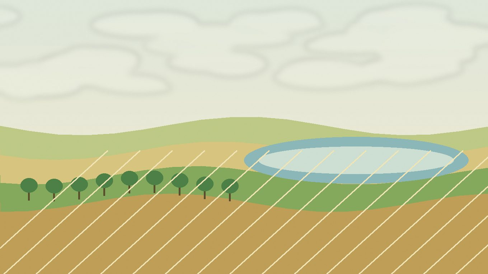

Полезные растения
для участка
Сидераты, медоносы, пряные, лекарственные, газонные и почвопокровные растения для зоны «южное ополье и озёрный край».
Разделы зоны
Справочники по типам посадок в этой природной зоне.
Овощи, зелень, бахчевые и культуры для тёплых гряд или теплицы. Для каждой позиции указаны условия, сроки и сортовые ориентиры.
Сад, ягоды и плодовыеЯгодные кустарники, земляника, плодовые деревья, лианы и экспериментальные садовые культуры.
Цветы и декоративные растенияЦветники, декоративные кустарники, хвойные, лианы и растения для тени, солнца или влажных мест.
Полезные растения для участкаРастения для чая, лекарственной грядки, сидерации, опылителей, газона и почвопокровных посадок.
Особенности для раздела
Условия, которые чаще всего влияют на выбор растений, сроки посадки и необходимость укрытия.
Как читать рекомендации
Оценка показывает не ценность растения, а устойчивость результата именно в этой зоне.
Обычно удаётся при стандартном уходе и правильных сроках посадки.
Подходит для зоны, но важны сорт, место посадки и обычная агротехника.
Нужны теплица, временное укрытие, дренаж, полив или более тёплый микроклимат.
Имеет смысл как опытная посадка на лучшем месте участка, без гарантии стабильного урожая.
Полезные растения для участка
Растения для чая, лекарственной грядки, сидерации, опылителей, газона и почвопокровных посадок. В раскрывающихся строках указаны не только конкретные сорта, но и подходящие группы, формы и типы посадок.
Популярное
Самые частые и понятные растения для этого раздела.
| Культура | Категория | Рекомендация | Где лучше | Сроки | Комментарий |
|---|
Дополнительные растения
Расширенный список для более точного подбора под участок и условия.
| Культура | Категория | Рекомендация | Где лучше | Сроки | Комментарий |
|---|
По выбранным фильтрам ничего не найдено.